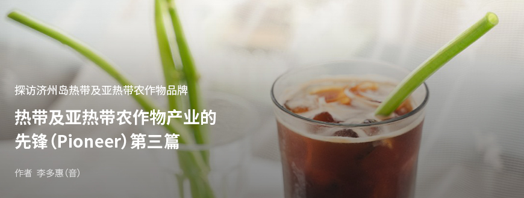
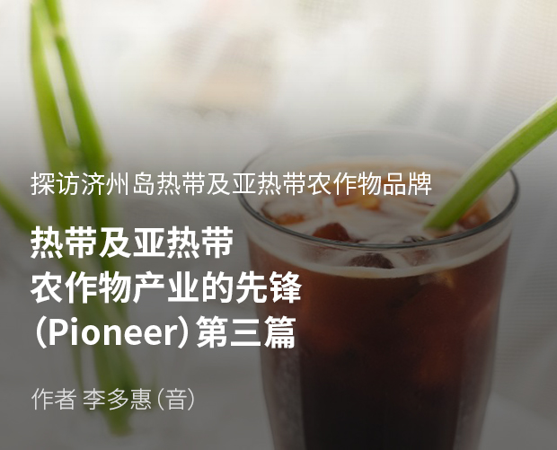
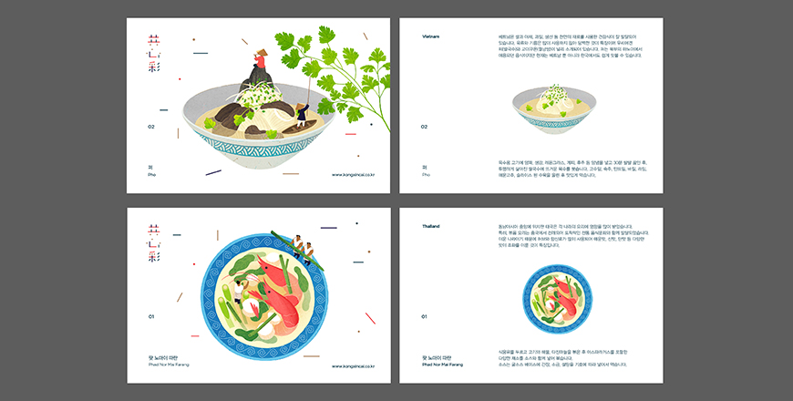
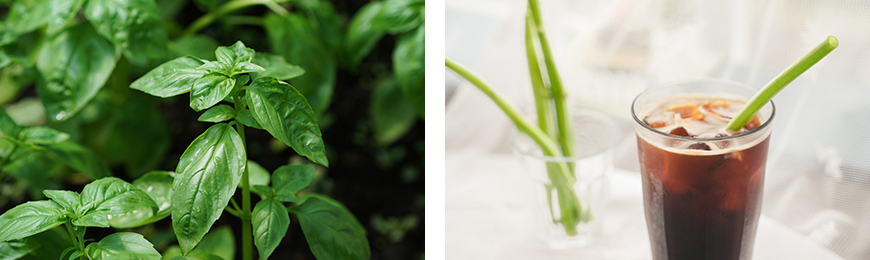
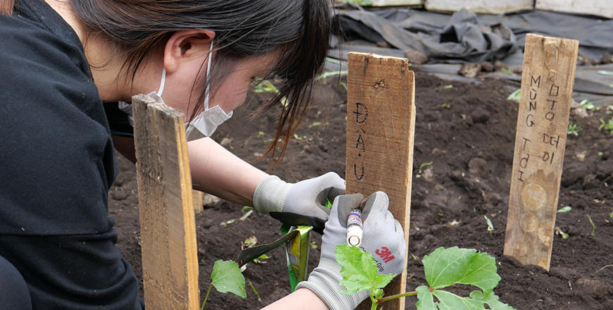

기획취재콘텐츠
- Home
- 제주라이프
- 기획취재콘텐츠
热带及亚热带农作物产业的先锋（Pioneer） 第三篇새로운 글



同心合意放光明，热带及亚热带农作物的社会农场“空心菜农业公司法人”
韩国家庭中有33万户是跨国婚姻家庭，占总体的1.6%，而跨国婚姻家庭的成员已近100万名。随着转换为多元文化社会，人们对于热带及亚热带农作物的需求也在逐渐增加。但是，依然存在着种族歧视和移民女性的人权问题等社会问题。有一家以韩语名称中寓意“同心合意放光明”的蔬菜“空心菜”作为法人名称，和济州岛移民女性一起主导食物创新的公司，那就是通过济州岛亚热带蔬菜的栽培、流通、体验、加工等，希望成为韩国第一农业公司的“空心菜农业公司法人”。
- (左)空心菜 商标, (右)空心菜农业公司法人的农产品箱 ⓒ空心菜农业公司法人 -
2017年，洪昌旭（音）代表成立了空心菜农业公司法人，旨在通过种植亚热带蔬菜，帮助移民结婚女性自立，构建可持续发展的农村和地区社会。他认为，在适宜种植亚热带蔬菜的自然环境下，由熟悉亚热带蔬菜的栽培和使用的移民结婚女性直接参与蔬菜的栽培，不仅可以增加移民结婚女性的收入，还可以引导未来的饮食产业。
空心菜农业公司法人于2018年秋天与集合结婚移民女性和跨国婚姻家庭的大静地区最南端务农文化合作社合作，开始种植作为亚热带农作物的空心菜和香菜，而生产的空心菜和香菜首次亮相在了众筹平台。因为觉得有利于销售并营销大众需求度不高的亚热带蔬菜。在众筹平台上还以混合空心菜和香菜的亚热带蔬菜箱、由空心菜农业公司法人亲自栽培的芝麻菜、小萝卜等沙拉蔬菜，以及土豆、西兰花等在济州岛西南端栽培的越冬蔬菜作为了奖品。并且，还将亚热带蔬菜菜谱制成了小册子，赠送给了对于亚热带蔬菜还很陌生的消费者。

- 发给众筹赞助人的亚热带农作物菜谱明信片 ⓒ空心菜农业公司法人 -
最终金额完全超过了众筹目标额，成功实现了亚热带蔬菜的试销。通过众筹平台，也获得了极佳的宣传效果。
目前，空心菜农业公司法人主要是以生产罗勒为主，也在试着种植亚热带蔬菜。由于亚热带蔬菜的个人需求度不大，很难预测消费量，加上供货商也不稳定，因此计划通过具有稳定销量的罗勒等草本类蔬菜来巩固收益基础的同时，通过亚热带蔬菜农作物的栽培实验，成长为稳定栽培并供应亚热带蔬菜的农户及供应商。

- (左)在空心菜农业公司法人农场栽培的罗勒 ⓒ空心菜农业公司法人,
(右)使用空心菜制作的环保吸管 ⓒ空心菜农业公司法人 -
(右)使用空心菜制作的环保吸管 ⓒ空心菜农业公司法人 -
空心菜农业公司法人正与结婚移民女性一起生产、加工、销售着罗勒、空心菜、香菜等亚热带蔬菜，从而推进“济州岛结婚移民女性故乡的本土餐饮事业”。已经在300多坪（990多平方米）的设施大棚中种植了无农药认证的空心菜和罗勒，截至2019年11月，通过供应给3家学校食堂和10多家餐厅，提高了收益。
2019年10月，与济州岛西归浦多文化家庭支援中心签订了业务合作协议，通过与移民女性共享亚热带蔬菜的栽培、收获方法及菜谱等信息，进行着烹饪各国家的料理后，与地区居民一起分享的移民女性当地餐饮及交流活动项目。并在体验和指导项目中应用了制作的空心菜环保吸管，同时准备了使用罗勒制作的加工品，探索亚热带蔬菜的第六产业化的可能性。
罗勒作为新鲜的香料蔬菜，使用范围广，需求量也稳定。加上罗勒加工品的知名度逐渐提升，因此，今年正在准备将其产品化。
- 空心菜农业公司法人代表洪昌旭

- 正在亲手种植的亚热带农作物的牌子上写名字的移民女性 ⓒ空心菜农业公司法人 -
兼顾地区社会创新与饮食创新并不是一件易事，但空心菜农业公司法人正通过阶段性地努力成长为社会农场及引领亚热带蔬菜第六产业化的企业。同时，也在通过亚热带蔬菜的栽培实验，提高符合济州岛环境的栽培技术，致力于培养跨国婚姻家庭中的务农人。
此外，通过Youtube和Brunch等网络频道，也在介绍着空心菜农业公司法人的农作物。洪昌旭代表的未来目标是，将结婚移民女性和跨国婚姻家庭的成员培养成Youtube博主及营销员，宣传济州岛优秀的农产品，并出口到他们的故乡。
空心菜农业公司法人将与更多当地企业合作，从而提高济州岛的价值。五年内的目标是将跨国婚姻家庭成员培养成Youtube博主及营销员，使公司成为一个平台，将济州岛的亚热带蔬菜及农作物出口到他们的故乡。希望通过与设计师、Youtube博主、主播、园丁等各领域的专家合作，提高公司的能力，成为韩国第一农业公司。
- 空心菜农业公司法人代表洪昌旭
이전글
다음글